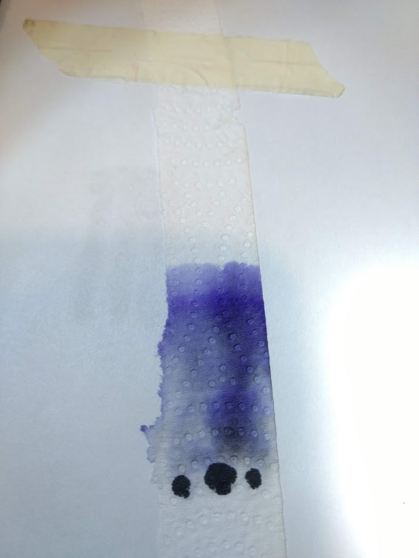
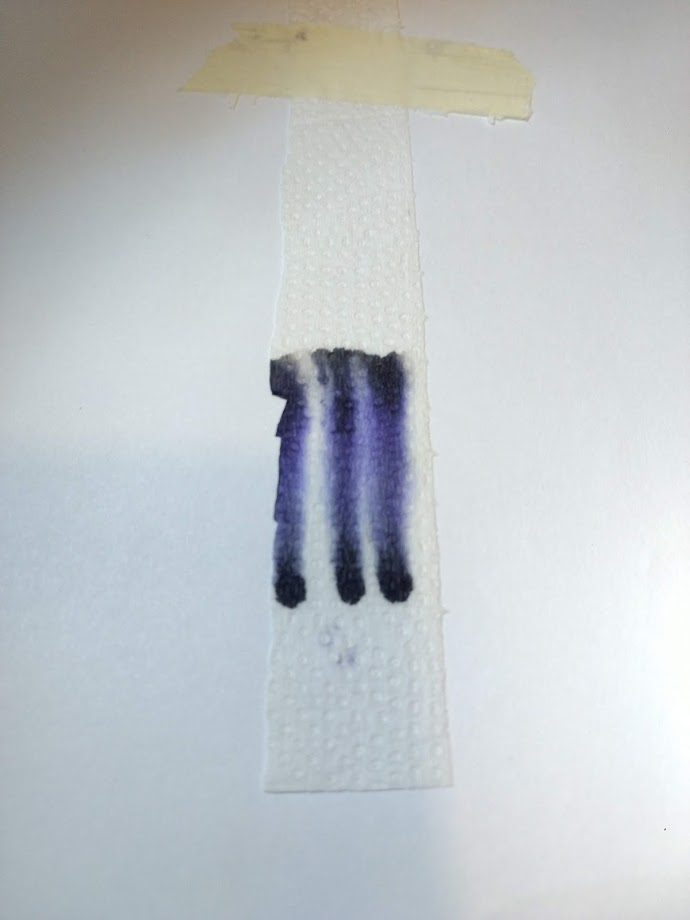
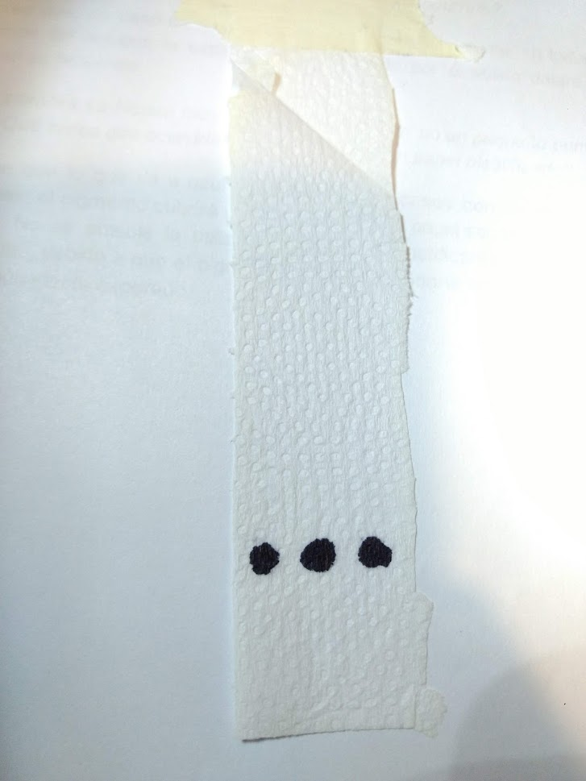

A continuación se va a analizar un experimento realizado para apreciar los efectos producidos por utilizar como método de separación de mezclas la cromatografía, la cual es una técnica de análisis químico utilizada para separar sustancias puras de mezclas complejas.
Para la realización del experimento se presentaron tres casos con diferentes eluyentes agua, alcohol y acetona. Mientras tanto la siembra será representada por tres puntos de un pigmento de color negro.
DE SEPARACION DE MEZCLAS
CASO Nº 1:
Como primer ejemplo veremos cómo funciona este experimento teniendo de eluyente a la acetona. Se puede apreciar una marcada separación de los colores que conforman la siembra dejándola en una gran gama que pasan desde un purpura claro a un azul intenso

CASO Nº 2:
En esta ocasión el eluyente será el alcohol, que deja como resultado tres “caminos” que inician de los puntos de siembra cada uno. En estos “caminos” se ve un efecto similar al producido en el caso nº1, con la pequeña diferencia de que ahora es menos notable la separación de colores. Aunque de igual manera es posible identificarlos.

CASO Nº 3:
Como ultima situación veremos el comportamiento del agua como un eluyente. A simple vista se puede determinar que el agua no tuvo ningún efecto significativo sobre la siembra, dejándola casi tal cual como al inicio del experimento.

PREGUNTAS HIPOTETICAS:
1-Si el eluyente tocara el lugar de la siembra ¿Qué crees que ocurriría?
Se cree que:
En el caso de la acetona, lo que sucedería es que la siembra se expandiría por todo el papel secante, generando una reacción agresiva.
En el caso de alcohol, la siembra se expandiría por el papel secante al igual que la acetona, pero no lo haría tanto.
En el caso del agua, la siembra no se expande en el papel secante, ya que no se produce un efecto químico tan fuerte.
2-Si la siembra se hiciera muy junta ¿Qué crees que ocurriría?
Se cree que, en caso de que la siembra se hiciera muy junta, en todos los casos, a excepción del tercero, la expansión del pigmento por el sólido dejara un color más fuerte en su recorrido.
3-Si la siembra se hiciera muy abundante, es decir, no un pequeño punto sino un gran punto ¿Qué crees que ocurriría? ¿Se podría usar un papel plastificado? ¿Por qué?
Se cree que lo que va a ocurrir es que, en los casos con un eluyente de grandes reacciones, el pigmento cubrirá una mayor parte del papel secante con un colores mas intensos. No es posible la utilización de papel plastificante para la realización del experimento, debido a que el pigmento no se impregnaría en el, y por lo tanto se podrá notar ningún efecto esperado.
CONCLUSION
Como conclusión de este experimento se puede determinar que la cromatografía es un método de separación de mezclas, en donde se puede notar a simple vista de que colores está conformado un pigmento, y como este asciende por un sólido gracias al efecto de capilaridad debido a una reacción química producida por un fluido llamado eluyente cuando entra en contacto con la siembra (en este caso un pigmento de color negro). También es posible determinar que, en este caso, la mejor manera para separar
DESARROLLO
ELEMENTOS Y REACTIVOS:
3 recipientes
Rotulador o birome
Papel secante
Cinta adhesiva
Pigmentos o tinta
Agua
Alcohol
Acetona (quitaesmalte)
PASOS NECESARIOS PARA LA REALIZACION DEL EXPERIMENTO:
Cortar tres tiras de servilleta y marcar, encada una, a 2 o 3 centímetros del borde aproximadamente, con lápiz negro, marcar una línea de referencia de donde se realizara la siembra.
Realizar con rotuladores, un punto pequeño sobre cada línea marcada.
Verter un eluyente en uno de los frascos hasta la altura de un centímetro aproximadamente.
Introducir una tira se servilleta dentro del frasco sin que el eluyente toque la siembra, sujetando la servilleta a la tapa del frasco con cinta adhesiva para que cuelgue dentro de el sin tocar sus paredes.
Dejar que el eluyente suba por efecto de capilaridad a lo largo de la servilleta hasta que este se detenga.